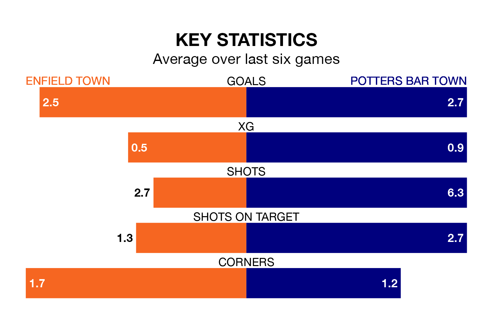

Enfield Town host Potters Bar Town at the Queen Elizabeth Stadium on Saturday on the back of three consecutive wins in the Isthmian Premier Division.
Enfield have picked up 16 points from their last six games, and they face a Potters Bar side who have lost their last two matches, and collected 12 points from the last possible 18.
With 72 goals in 37 games so far this season, Enfield are scoring more than average in the league with 1.9 goals per game. And they are conceding fewer than average, letting in 50 goals at a rate of 1.4 per game.
Potters Bar are also above average scorers, with 1.7 goals per game, compared to a league average of 1.6. They have conceded 1.6 goals per game.
In the last 10 years, Enfield and Potters Bar have played each other on 10 occasions. Enfield won eight of them, Potters Bar one, and they drew once.
On average, Enfield scored 2.4 goals and Potters Bar 0.8 in those matches.
Their last meeting was on September 2, when Enfield won 3-0 at home.
Enfield Town are fourth in the table after 37 games, of which they have won 19 and drawn 10, earning 67 points.
Potters Bar Town are nine places behind the home team in 13th, with 13 wins and nine draws putting them on 48 points.
Enfield's last match was on April 6, a 4-0 win against Dulwich Hamlet.
Potters Bar lost 3-2 against Margate last time out, on Thursday.
Updated: 10:01 (UTC), 12/04/24